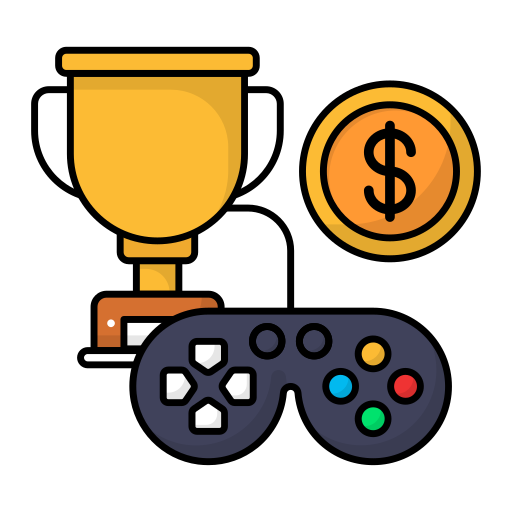

videojuegos=1, fútbol=0
10/11/21
¿Los eSports, o deportes electrónicos pueden ser considerados un "deporte"?
En este blog hablaré acerca de los deportes electrónicos, también conocidos como "eSports" y debatiré acerca si éstos pueden ser considerados un "deporte".
Desarrollo
A lo largo de los tiempos, los deportes han ido evolucionando acorde al tiempo en el que se vive. Por lo que llegó el momento en el que salir a jugar y sudar es cosa el pasado. Lo importante ahora es conseguir el mayor puntaje en la liga de tu videojuego favorito para poder alardear frente a tus amigos.
Personalmente, creo que los eSports deben ser considerados un deporte. Ya que requere de práctica, dedicación y de un "aprendizaje" especializado para poder alcanzar los principales lugares. Justo y como ocurre en los deportes convencionales. Aparte, si el ajedrés es considerado un deporte, ¿Porqué los videojuegos no deberian de serlo?
Motivación
Mi Motivación para realizar este blog es mi gran interés en los videojuegos y en los eSports.
 Ranking
Ranking Sitios oficiales
Sitios oficiales
 eSports
eSports